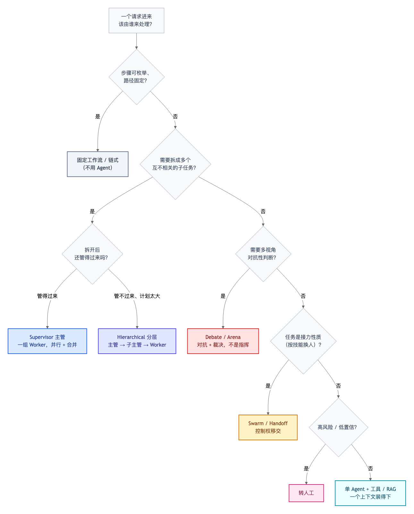
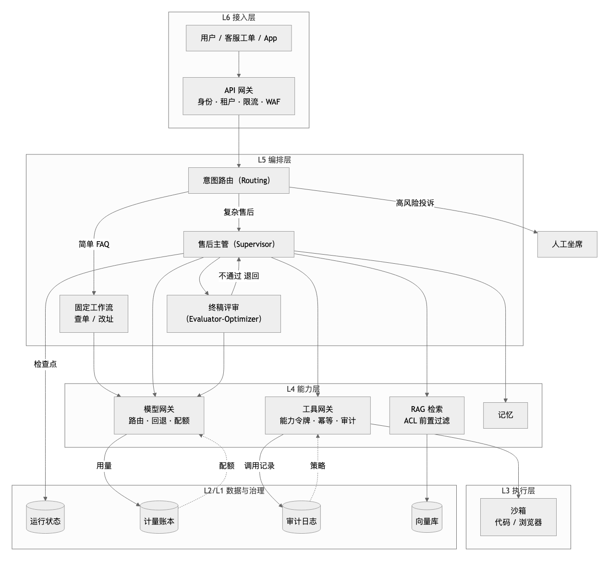
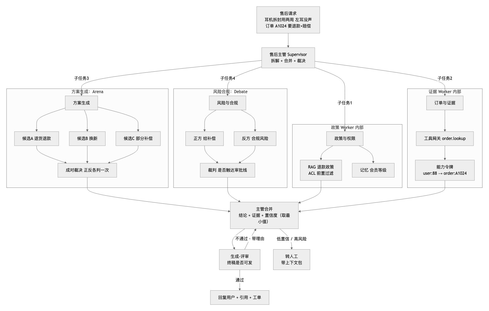

组合架构：一个真实售后 Agent 平台
为什么单一模式是不现实的
前面 v4/v5/v6 把 11 种结构一个个讲清楚，是为了让每种结构可辨认。但真实业务里几乎没人只用一种：
- 所有请求都进 Agent 循环 → 简单查单也烧钱、还慢；
- 所有请求都走固定工作流 → 稍微复杂一点就覆盖不了；
- 全部交给多 Agent → 成本爆炸，还容易错误传播。
真实系统是分层的：外层做路由，中间做编排，内层做拓扑，关键节点加评审，所有动作都过网关。本章把这些组合成一个具体场景，并说明每一层为什么存在。
先纠正一个误解：主 Agent 不一定用主管模式
看到图 1、图 2 容易产生一个错觉——「主 Agent 就是主管」。不是。 主管只是「需要拆解」时的默认选择。主 Agent 用什么拓扑，由任务的形态决定：

图 0 · 先判断“要不要 Agent”，再判断“要拆解、要对抗、还是接力”，主管只是四种多 Agent 选择之一
按从上往下的顺序判断：
| 判断 | 结论 | 说明 |
|---|---|---|
| 步骤可枚举、路径固定 | 不用 Agent，固定工作流 / 链式 | 最稳、最便宜 |
| 不需要拆解，一个上下文装得下 | 单 Agent + 工具 / RAG | 多数产品的真实选择 |
| 要拆成独立子任务、管得过来 | Supervisor 主管 | 最常见的多 Agent 默认值 |
| 要拆解但计划大到装不下 | Hierarchical 分层 | 主管也管不过来时才加层 |
| 需要多视角对抗性判断 | Debate / Arena | 靠裁决，不靠指挥 |
| 任务按技能接力 | Swarm / Handoff | 换人，不是拆解 |
| 高风险 / 低置信 | 转人工 | 正确行为，不是失败 |
别让「主管」成为默认答案
把「查订单到哪了」交给主管，它会拆成三个子任务、跑三次模型、延迟八秒，最后说一句「已发货，明天到」。而固定工作流一次工具调用 200ms 就完成。拓扑选错的代价是 10 倍成本 + 一个量级的延迟。
场景：电商售后 Agent 平台
一个真实请求是这样的：
「我买的耳机拆了用了两周，左耳没声，订单 A1024，要退款 + 赔偿，不然投诉。」
这一句话同时包含：政策判断（能不能退）、身份权限（是否本人）、证据核对（订单与商品状态）、方案生成（退/换/补偿）、合规风险（赔偿是否越权）、情绪风险（威胁投诉）。任何一种单一模式都接不住它。
一图看懂：整体分层

图 1 · 一个请求自上而下穿过六层；治理面（右下方虚线）横向约束每一层，而不是某一层
颜色 = 模式
本图按模式上色，方便一眼识别：■ 紫 = Routing 路由、■ 蓝 = Supervisor 主管、■ 绿 = Evaluator-Optimizer 生成-评审；灰色是基础设施（网关、检索、存储、沙箱）。
图 2：主管内部，四种模式同时在场
真正的复杂度在图 1 的「售后主管」这个盒子里。展开它：

图 2 · 一个 Supervisor 内部同时跑着 Worker、Arena、Debate、Evaluator，以及 RAG 与工具网关
一张图里同时有六种模式
■ 蓝 = Supervisor（拆解与合并）、■ 黄 = Arena（多候选对战）、■ 红 = Debate（正反方裁决）、■ 绿 = Evaluator-Optimizer（终稿评审）、■ 紫 = Chaining（合并收口）；灰色是 Worker 与基础设施。
一次请求的完整时序
1. 接入层 API 网关：校验身份、租户额度、限流；未开通租户直接 403
2. 路由层 意图分类：『退款+赔偿+投诉』→ 置信度 0.78 → 复杂售后
（低于阈值则转人工，绝不硬塞进某个业务流）
3. 主管拆解 4 个子任务，各自独立预算（父预算 = 子预算之和的上限）
4. Worker 并行
├ 政策：RAG 检索，ACL 在召回阶段过滤（VIP 政策对普通用户不可见）
├ 订单：工具网关 + 能力令牌（user:88 只能查 order:A1024）
├ 方案：Arena 生成 3 个候选，正反各判一次，得到排名
└ 风险：Debate 正反方 + 裁判，判断是否越过赔偿审批线
5. 合并 主管只合并「结论 + 证据 + 置信度」，不吞全部轨迹
合并置信度取最小值（最弱一环决定可信度）
6. 评审 生成-评审：终稿不过就带理由退回重写
7. 出口 通过 → 回复（带引用）+ 建工单；不通过/高风险 → 转人工（带上下文包）
8. 全程 每一步：用量入账本、调用入审计、状态写检查点
为什么每一层都不可省
这张图里每个盒子都对应一个真实会出的事故，去掉任何一个都会出问题：
| 组成部分 | 如果去掉会怎样 |
|---|---|
| 意图路由 | 查单请求进 Agent 循环，成本涨十倍，延迟涨一个量级 |
| 主管 + 子任务隔离 | 一个上下文里塞进政策、订单、方案、风险，互相干扰 |
| Arena | 只出一个方案，没有比较，无法选更优的补偿策略 |
| Debate（风险） | 直接给补偿方案，越过审批线，合规事故 |
| 生成-评审 | 终稿无把关，把“不能退”写成“能退” |
| 工具网关 + 令牌 | Agent 拿着超级账号查任意订单，越权 + 无法追责 |
| RAG ACL 前置 | 召回后再过滤，等于已泄露“存在这份文档” |
| 计量账本 | 回答不了“这个月哪个租户花了多少” |
| 审计（含拒绝） | 出了事查不到“谁试图做什么” |
| 检查点 | 跑一半进程挂了，从头再来，重复扣款风险 |
模式之间怎么装在一起
组合不是随意的，有明确的嵌套规则：
L5 编排层
├─ Routing 决定「走哪条路」 ← 只做一次
├─ Supervisor 决定「拆几个子任务、怎么合」 ← 外层拓扑
│ ├─ Worker（RAG / 工具） 干具体活
│ ├─ Arena 「哪个方案更好」 ← 子任务内的选优
│ ├─ Debate 「有没有风险」 ← 子任务内的判断
│ └─ Chaining 单条链路里步骤固定 ← worker 内部
└─ Evaluator 决定「终稿能不能发」 ← 收口
三条经验规则：
- 路由在最外层，只做一次。它的错误下游无法修正。
- 拓扑在中间层。它决定“谁和谁说话”，但具体每一步用什么模式由子任务自己定。
- 评审在收口。它管“质量底线”，不参与生成，否则会自我表扬。
成本与延迟的真实代价
复杂度不是免费的。这个场景相对“单 Agent 直答”的代价：
| 维度 | 单 Agent 直答 | 本组合架构 |
|---|---|---|
| 模型调用次数 | 1 | 8–15（含 Arena 的 O(N²) 与 Debate 三方） |
| 端到端延迟 | ~2s | ~8–15s（Worker 可并行压缩一部分） |
| 每请求成本 | 低 | 高 8–20 倍 |
| 可解释性 | 差 | 强（每步有证据与引用） |
| 出错时定位 | 难 | 易（按层查 trace） |
所以这个架构只该用在“错一次代价高”的请求上——比如涉及金额、合规、投诉。简单的“查订单到哪了”必须走上面的固定工作流分支，这正是路由存在的意义。
什么时候不要这么复杂
反过来说清楚，避免过度设计：
- 请求类型单一（只有一种业务）→ 去掉路由，直接固定流程；
- 任务可完全枚举 → 用工作流，不要 Agent 循环；
- 答案可验证且单一 → 去掉 Arena，直接生成 + 评审；
- 没有越权/合规风险 → 工具网关可以退化为简单鉴权；
- 单租户、内部工具 → 计费与多租户可以后置。
判断标准只有一个：当前架构是否已经被某一类问题反复卡住。没卡住就不要提前建。
自检清单
- [ ] 能指出这张图里哪一层是「路由」、哪一层是「拓扑」、哪一层是「模式」。
- [ ] 能说出为什么 ACL 过滤必须在召回阶段而不是生成之后。
- [ ] 能解释 Arena 和 Debate 在这个场景里分别解决什么不同问题。
- [ ] 能说出合并置信度为什么取最小值。
- [ ] 能列出至少三个“去掉某个组件就会出事故”的例子。
- [ ] 能判断一个请求该走这张图，还是走更简单的固定工作流。
路由遇上一句话多个诉求怎么处理，见多意图路由。
不确定某个业务该用哪种范式，见范式选型指南；要上线运营，见企业级参考架构。
相关实现：Mini Agent v4（拓扑）、v5（模式）、v6（Arena/Swarm）、部署形态（如何上线）。